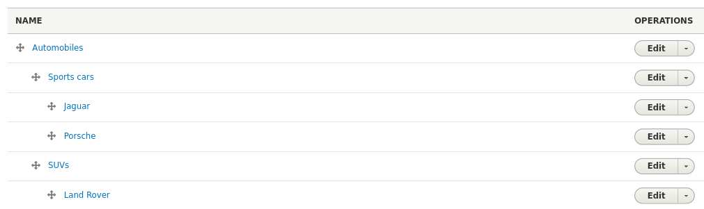

Islandora Workbench lets you create vocabulary terms from CSV files. This ability is separate from creating vocabulary terms while creating the nodes in a create task, as described in the "Drupal fields and CSV fields" documentation. You should create vocabulary terms using the options described here if any of these situations applies to you:
- you are working with a vocabulary that has fields in addition to term name
- you are working with a vocabulary that is hierarchical
- you want terms to exist before you create nodes using a
createtask.
If you want to create terms during a create task, and if the terms you are creating don't have any additional fields or hierarchical relationships to other terms, then you don't need to use the task described here. You can use the method you can create terms as described in as described in the "Taxonomy reference fields" section of "Drupal fields and CSV fields."
The configuration and input CSV files
To add terms to a vocabulary, you use a create_terms task. A typical configuration file looks like this:
task: create_terms
host: "http://localhost:8000"
username: admin
password: islandora
input_csv: my_term_data.csv
vocab_id: myvocabulary
The vocab_id config option is required. It contains the machine name of the vocabulary you are adding the terms to.
The CSV file identified in the input_csv option has one required column, term_name, which contains each term's name:
term_name
Automobiles
Sports cars
SUVs
Jaguar
Porche
Land Rover
Note
Unlike input CSV files used during create tasks, input CSV files for create_terms tasks do not have an "id" column. Instead, term_name is the column whose values are the unique identifier for each term. Workbench assumes that term names are unique within a vocabulary. If the terms in the term_name column aren't unique, Workbench only creates the term the first time it encounters it in the CSV file.
Two reserved but optional columns, weight, and description, are described next. A third reserved column header, parent is described in the "Hierarchical vocabularies" section. You can also add columns that correspond to a vocabulary's field names, just like you do when you assemble your CSV for create tasks, as described in the "Vocabularies with custom fields" section below.
Term weight and description
Two other reserved CSV column headers are weight and description. All Drupal taxonomy terms have these two fields but populating them is optional.
weightis used to sort the terms in the vocabulary overview page in relation to their parent term (or the vocabulary root if a term has no parent). Values in theweightfield are integers. The lower the weight, the earlier the term sorts. For example, a value of "0" (zero) sorts the term at the top in relation to its parent, and a value of "100" sorts the term much lower.descriptionis, as the name suggests, a field that contains a description of the term.
If you do not add weight values, Drupal sorts the terms in the vocabulary alphabetically.
Vocabularies with custom fields
Example column headers in a CSV file for use in create_terms tasks that has two additional fields, "field_example" and "field_second_example", in addition to the optional "description" column, would look like this:
term_name,field_example,field_second_example,description
Here is a sample CSV input file with headers for description and field_external_uri fields, and two records for terms named "Program file" and "Data set":
term_name,description,field_external_uri
Program file,A program file is executable source code or a binary executable file.,http://id.loc.gov/vocabulary/mfiletype/program
Data set,"A data set is raw, often tabular, data.",https://www.wikidata.org/wiki/Q1172284
Optional fields don't need to be included in our CSV if you are not populating them, but fields that are configured as required in the vocabulary settings do need to be present, and populated (just like required fields on content types in create tasks). Running --check on a create_terms task will detect any required fields that are missing from your input CSV file.
Hierarchical vocabularies
If you want to create a vocabulary that is hierarchical, like this:

you can add a parent column to your CSV and for each row, include the term name of the term you want as the parent. For example, the above sample vocabulary was created using this CSV input file:
term_name,parent
Automobiles,
Sports cars,Automobiles
SUVs,Automobiles
Jaguar,Sports cars
Porche,Sports cars
Land Rover,SUVs
One important aspect of creating a hierarchical vocabulary is that all parents must exist before their children are added. That means that within your CSV file, the rows for terms used as parents should be placed earlier in the file than the rows for their children. If a term is named as a parent but doesn't exist yet because it came after the child term in the CSV, Workbench will create the child term and write a warning in the log indicating that the parent didn't exist at the time of creating the child. In these cases, you can manually assign a parent to the terms using Drupal's taxonomy administration tools.
You can include the parent column in your CSV along with Drupal field names. Workbench will not only create the hierarchy, it will also add the field data to the terms:
term_name,parent,description,field_external_uri
Automobiles,,,
Sports cars,Automobiles,"Sports cars focus on performance, handling, and driver experience.",https://en.wikipedia.org/wiki/Sports_car
SUVs,Automobiles,"SUVs, or Sports Utility Vehicles, are the most popular type of automobile.",https://en.wikipedia.org/wiki/Sport_utility_vehicle
Jaguar,Sports cars,,
Porche,Sports cars,,
Land Rover,SUVs,,